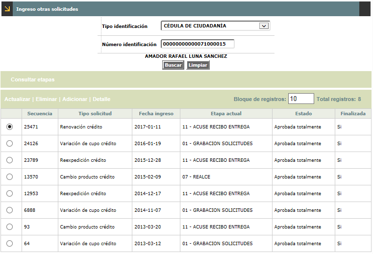
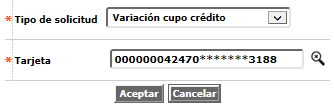
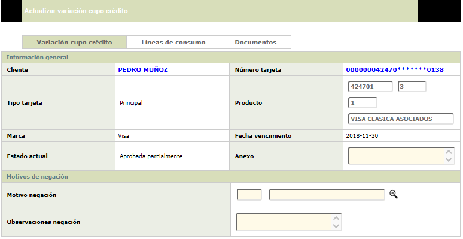
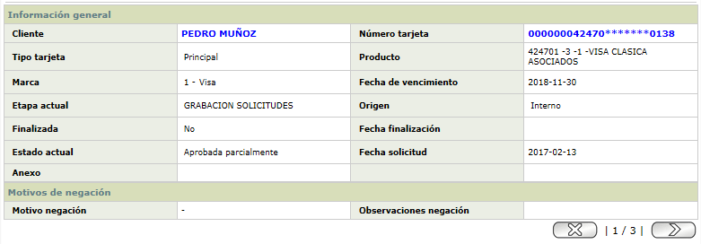
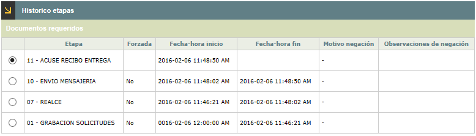

Ingreso otras solicitudes |
A través de este formulario la entidad captura la información referente a la solicitud de un nuevo producto como cliente principal o titular del crédito, y los clientes Adicionales que pueda llegar a solicitar éste. Inicialmente, el formulario cuenta con un filtro de búsqueda en la parte superior que traerá sólo la información de las solicitudes de Crédito nuevo que posea el cliente consultado.
Tipo identificación |
En este campo se selecciona de una lista de valores, el tipo de documento de identificación del cliente. |
Número identificación |
En este campo se debe capturar el número del documento de identificación del cliente para registrar o consultar una solicitud de crédito nuevo. Acepta máximo 16 caracteres. |

El formulario contiene las opciones Actualizar, Eliminar, Adicionar, Detalle, y Consultar etapas en la parte superior. Adicionalmente, existe la opción Adicionales que sólo se mostrará cuando la solicitud sea de tipo Titular con adicional.

Adicionar: Invoca cualquiera de las distintas clases de solicitudes que podría requerir un cliente, las que son filtradas de acuerdo con el perfil del usuario, mostrando únicamente los tipos de solicitud autorizados para cada uno de ellos: Variación cupo crédito, Renovación crédito, Reposición crédito, Reexpedición crédito, Reactivación crédito, Línea crédito adicional, Cambio ciclo facturación crédito, Cancelación voluntaria crédito, Cambio producto crédito, Reposición débito, Renovación débito, y Reexpedición débito,; así mismo, dependiendo el tipo de solicitud es posible indicar si ésta se realiza para Solo adicional, Solo titular o Titular con adicionales. Una vez se presione el botón Aceptar, la pantalla correspondiente es invocada para permitir la captura de todos los datos concernientes a la solicitud.

Tipo de solicitud |
Campo obligatorio de salida que muestra el tipo de solicitud que se está ingresando. |
Tarjeta |
Indica el número de tarjeta sobre la cual aplica el requerimiento del cliente. |
Actualizar: Estas opciones dependen del tipo de solicitud elegido.Si el usuario invoca la opción Actualizar se despliega un wizard de tres tabs: Variación cupo de crédito, Líneas de crédito y Documentos. Los dos primeron formularios cuentan con los botones Salvar y Cancelar, mientras que Documentos sólo cuenta con el botón Cancelar debido a que sus modificaciones se guardan internamente en el mismo formulario.

Detalle: Si el usuario invoca la opción Detalle se despliega el siguiente wizard de consulta de cuatro pasos: Información general del Titular solo o con Adicional; Líneas de crédito, y Documentos. Los formualrios cuentas con botones de navegación interna en la parte inferior derecha.

Consultar etapas:
Si el usuario invoca la opción la consulta de etapas se despliega el
siguiente formulario, el cual se va alimentando a medida que la solicitud
avanza de etapa hasta ser Aprobada.

Ingreso de Titular | Ingreso de Adicionales | Consultar etapas